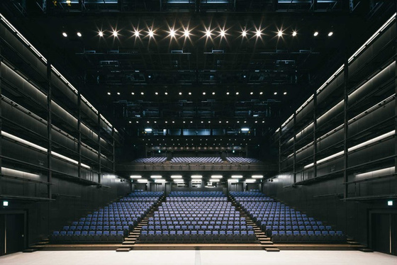
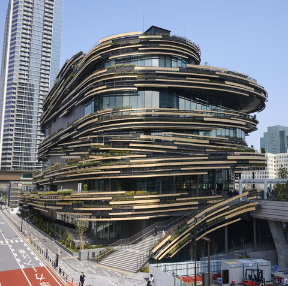
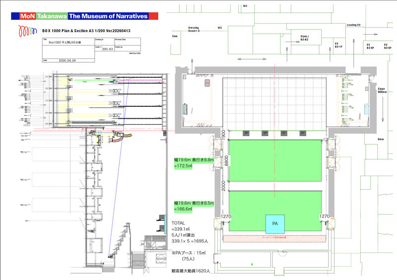

MoN Takanawa / BOX1000
NU LIVE
ライブ、電子音楽、オーディオビジュアル・パフォーマンスを展開するメインライブ。音楽、映像、光、テクノロジーが既存のライブフォーマットを拡張します。
3月12日（金）〜14日（日）
- 3月12日（金）はボーカロイドイベント NIGHT HIKE を開催。
- 会期中の1日は NU LIVE × Sonar Sound のコラボレーション。
開催概要・技術仕様・会場図面


プログラム
音楽ライブ、オーディオビジュアルライブ、DJ。実験的なパフォーマンスや既存作品の新たな解釈など、アーティストとともに、この空間ならではの表現を探ります。
- 会期
- 3月12日（金）〜14日（日）
- 時間
- 全日 16:00開場 / 17:00開演 / 22:00終了
- 出演構成
- 各日程の企画内容による
会場・技術仕様
- 会場
- MoN Takanawa: The Museum of Narratives
BOX1000（B3F–B1F） - ステージ
- W 19 m × D 9 m × H 9 m
- LEDスクリーン
- W 21 m × H 9 m
- 音響
- d&b audiotechnik
- 最大収容
- 2,000人（スタンディング）
BOX1000 会場図面

